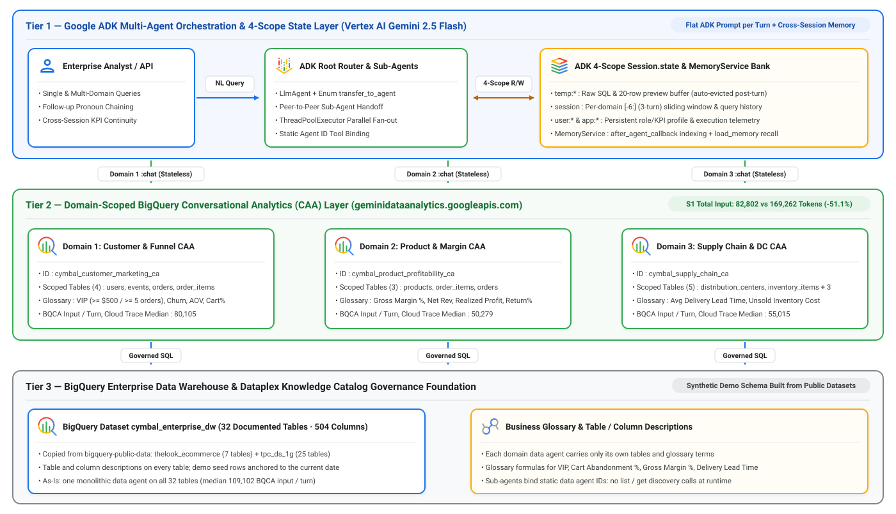

From Monolithic Text-to-SQL PoC to Multi-Domain Enterprise Analytics
Teams adopt single-table Text-to-SQL PoCs quickly, then stall when they connect a production warehouse with dozens of documented tables and department glossaries. One monolithic BigQuery Conversational Analytics (BQCA) data agent re-reads the entire warehouse schema on every internal LLM call. At the same time, default Google ADK tools send only one stateless message per turn and lose context across sessions. This portal reproduces that enterprise bottleneck on a 32-table documented BigQuery warehouse and compares the default single-agent setup (As-Is) against a domain-scoped ADK + BQCA multi-agent architecture (To-Be) on live Google Cloud runs, measuring ADK tokens from Vertex AI usage_metadata and BQCA tokens from Cloud Trace.
Why single-agent PoCs stall at warehouse scale
Connecting a conversational agent to a multi-department warehouse exposes three bottlenecks across the ADK and BQCA tiers.
- Schema and history bloat in both tiers: A BQCA chat turn usually runs two internal LLM calls, each reading the bound schema and glossary (108.5K uncached median input tokens on the 32-table agent). Meanwhile, the default ADK session replays raw tool outputs until the prompt grows from 5.8K to 33.1K tokens over 8 turns.
- Stateless amnesia vs. single-agent lock-in: Built-in ask_data_agent looks up the agent on every call and sends only the current question, dropping follow-up filters unless the root LLM rewrites them. Server-managed ConversationReference keeps history on the server, yet locks the conversation to one data agent.
- No continuity across sessions: Opening a new session clears prior root-cause findings and user KPI preferences, forcing repeated BigQuery queries for questions already answered.
Domain-scoped agents with ADK-managed state
Instead of relying on one warehouse-wide agent or server-locked conversations, the To-Be design narrows schema scope per domain and manages context in ADK.
- Scoped data agents & 3-way routing: A Root Router delegates to three domain Sub-Agents (CRM, Product, Supply Chain), each bound to 3 to 5 tables and one domain glossary. Sub-Agents hand over directly to peers (transfer_to_agent), and cross-domain questions run in parallel via ThreadPoolExecutor.
- Bounded 3-turn windows in both tiers: Each stateless :chat call carries the domain's last 3 turns ([-6:]). In ADK, static instructions, one tool per Sub-Agent, before_model_callback 3-turn compaction, slimmed tool outputs, and skip_summarization cap prompt growth.
- 4-scope state & cross-session memory: Separating temp:, session, user:, and app: state with MemoryService lets new sessions answer saved findings without calling BQCA.
What improved and where to test it live
Each step below pairs pre-recorded GCP baselines with a live Dual A/B Workbench, an ADK event flow diagram, and hand-written reference SQL.
- Lower input tokens & bounded session cost: Total input tokens dropped by 51.1% on single-domain queries (S1), 53.5% on follow-ups (S2), 68.4% after a domain switch (S3), and 53.9% on average across an 8-turn session (-29.8% list-price cost, S4).
- Zero-BQCA recall & reference SQL spot-check: New-session recall answered in 6.8s with 0 BQCA calls (S5). Across 5 runs per preset query, To-Be matched all reference figures in 5/5 (S1), 5/5 (S3 switch), 4/5 (3-domain), and 4/5 (S4) runs vs. 0, 4, 1, and 4 on As-Is.
- Stated trade-offs: 3-domain fan-out token delta depends on how many calls As-Is makes (-47.8% at 3 vs. 3 calls; +49.3% when As-Is used 1 call). On S2 follow-ups, both setups often compute channel revenue across all customers rather than VIPs alone.
2. Best-Practice Multi-Agent Architecture & Trade-Off Matrix
Inspect the four official Google Cloud vector architecture views and the unbiased trade-off evaluation across One-Shot Stateless, Server-Managed Stateful, and Proposed ADK-Managed Hybrid architectures.
Fig 1. End-to-End 3-Tier Enterprise System Architecture
Tier 1 (ADK Root Orchestrator & 4-Scope State/Memory) → Tier 2 (3 Domain-Scoped Stateless BigQuery CAA Agents) → Tier 3 (32-Table BigQuery Warehouse & Scoped Glossary).

| Dimension | As-Is: built-in ADK data agent tools | BQCA managed conversation (stateful) | To-Be: this repository |
|---|---|---|---|
| Routing | One data agent answers every question | One data agent per conversation, fixed at creation | Root Router hands over to one of three Sub-Agents; Sub-Agents hand over to each other; cross-domain questions fan out in parallel |
| Multi-turn context | ask_data_agent sends only the current question; the root LLM has to restate earlier context | History is kept on the server for that conversation | The last 3 turns of the domain are sent with each stateless call |
| ADK prompt | The full session is replayed on every LLM call, including raw tool responses | Depends on the agent that wraps it | Last 3 user turns; tool results reduced to the answer and a capped table |
| BQCA context per call | The whole warehouse schema and every glossary | Same as the bound data agent | 3 to 5 tables and one domain glossary per data agent (measured in Sections 3 and 4) |
| Cross-session memory | None | Within one conversation only | User-scoped state and a memory service; recall without a BQCA call |
3. Live As-Is vs. To-Be PoC Scenario Verification & Progressive Workbench (S1 – S5)
Pre-verified GCP baseline results load immediately below, while the Interactive Dual A/B Workbench lets you enter or customize prompts at every step from S1 to S5 to run both the As-Is pipeline (ADK built-in data agent tools on one monolithic data agent) and the To-Be pipeline live in parallel on Google Cloud and compare answers, SQL and measured ADK-tier Vertex AI usage_metadata tokens.
4. Token Development over an 8-Turn Session and Cost at List Prices
Measured in the S4 baseline run. Left: total input tokens per turn, that is ADK prompt tokens from Vertex AI usage_metadata plus BQCA input tokens from Cloud Trace. Right: ADK prompt tokens per turn. Below: yearly cost at list prices, scaled from the measured average cost per turn.
Total Input Tokens per Turn (ADK + BQCA)
ADK Prompt Tokens per Turn
Yearly Cost Scaled from the Measured Average Turn
Cost per turn = measured ADK tokens and measured BQCA tokens of the S4 session at list prices: BQCA input $3.00/1M, cached input $0.30/1M, output $20.00/1M; gemini-2.5-flash input $0.30/1M, cached input $0.03/1M, output $2.50/1M. BigQuery query cost is not included. The yearly figure is a linear scaling of that average, not a forecast.
5. Git Repository Implementation Map & PoC Reproduction
Key Implementation Files
agentic_bi_showcase/ (https://github.com/rhkim77/agentic_bi_showcase)
├── agents/
│ ├── bq_caa_3domain_multi_agent/agent.py # Root + 3 Sub-Agents + 4-Scope State + MemoryService
│ │ # + before_model_callback (3-turn cap) + after_model_callback
│ ├── bq_caa_streaming_agent/agent.py # SequentialAgent + BaseAgent :chat SSE Streamer
│ └── bq_caa_toolset_agent/agent.py # Built-in DataAgentToolset baseline comparison
├── backend/
│ ├── main.py # FastAPI portal + SSE Workbench endpoints
│ ├── workbench_engine.py # Dual A/B live runner + ADK step stream
│ └── reference_answers.py # Hand-written reference SQL for preset questions
├── scripts/
│ ├── provision_enterprise_warehouse.py # 32-table documented warehouse + monolithic As-Is agent
│ ├── provision_cymbal_caa_agents.py # 3 Domain-Scoped BigQuery CAA Data Agents
│ ├── 04_run_scenario_benchmarks.py # Live S1-S5 Dual A/B + Cloud Trace span matching
│ ├── 05_measure_bqca_tokens_from_trace.py # Cloud Trace medians per Data Agent
│ ├── 06_build_reference_answers.py # Reference SQL snapshot for baseline cards
│ └── build_outcome_portal.py # Compiles EN (index.html) & KO (index_ko.html) portals
├── benchmarks/scenario_benchmark_results.json # Measured S1-S5 SQL, answers & 2-tier token telemetry
└── docs/
├── ARCHITECTURE_AND_CONFIGURATION_GUIDE.md
└── SCENARIO_WALKTHROUGH_AND_BENCHMARKS.md
Reproduce All 5 A/B Scenarios on GCP
gcloud auth application-default login \ --scopes="https://www.googleapis.com/auth/cloud-platform" export GOOGLE_GENAI_USE_VERTEXAI=TRUE export GOOGLE_CLOUD_PROJECT="your-gcp-project-id" git clone https://github.com/rhkim77/agentic_bi_showcase.git cd agentic_bi_showcase uv sync uv run python scripts/provision_enterprise_warehouse.py uv run python scripts/refresh_demo_seed.py uv run python scripts/provision_cymbal_caa_agents.py uv run python scripts/04_run_scenario_benchmarks.py uv run python scripts/05_measure_bqca_tokens_from_trace.py uv run python scripts/06_build_reference_answers.py uv run python scripts/build_outcome_portal.py uv run adk web agents --port 8000
References: CAA Integration Patterns · CAA State Management · Data Agents Pricing (90% Cached Input) · ADK Sessions & Memory